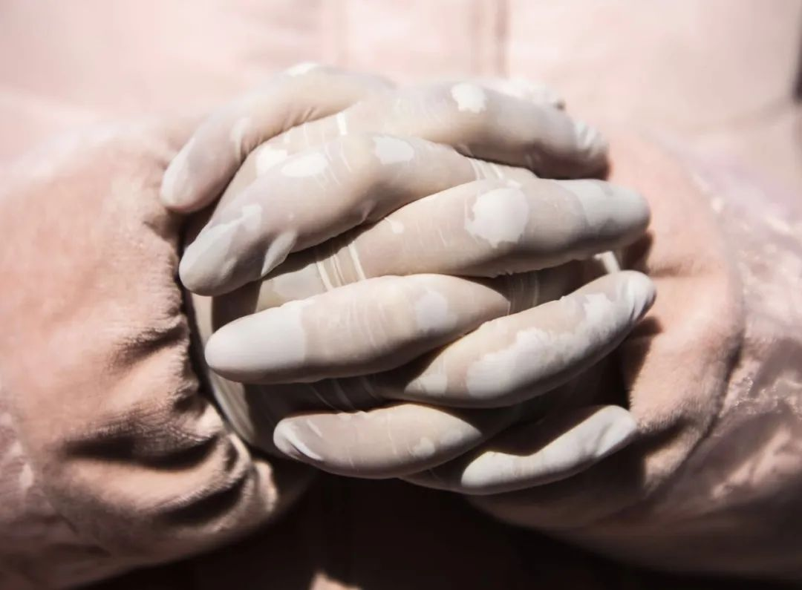

床位的抉择：武汉肿瘤患者求医之困
原文链接 备份链接 疫情严峻，武汉仍在不断征集新冠肺炎床位。重压之下，各家医院肿瘤科「只出难进」，有患者被迫出院，通过网络发帖求助；也有患者试图寻求省外求医路，却被两边「入院接收单」与「通行证」夹在中间，难寻答案。 —— 同一个家庭里的新 …

武汉新冠肺炎疫情肆虐，每一个家庭都在举全家之力，从防疫生死线上拽住家人。患者、家庭、医院……求医与救治环环相扣。有的人最终去世，更多的人在治愈出院，在历经煎熬、等待、悲痛、喜悦之后，用人心和勇气筑起的这道防疫线，正在变得牢固而强健。
全文5012字，阅读约需10分钟
点击下图进入阅读新京报特别策划

*新京报记者 王瑞锋 祖一飞 韩茹雪 王飞翔 王翀鹏程 梁静怡 编辑 胡杰 校对 吴兴发*
扩散是逐渐的。起初是两个，三个，几个白色斑点，接着连成一片，白色阴影从右肺蔓延到左肺。
在医生办公室，胡安平清楚地从光片上看到自己肺里的那些白色斑点。2019年12月底，53岁的湖北人胡安平觉得全身乏力、咳嗽、发冷，盖着三床被子还觉得冷，到当地医院就诊时，被诊断为肺炎。
打了两天针，再去拍片子，主治医生告诉家人，情况很严重，准备下“病重通知书”。1月5日下午，胡安平被救护车送到武汉中南医院，确诊为新型冠状病毒肺炎感染者，成为湖北最早一批确诊的患者。
病毒来势凶猛。第二天，肺已经成为“白肺”，高烧，呼吸困难，胡安平被送进重症监护室。
如同肺叶上飞快弥散的斑点阴影，大量疑似和确诊病人开始涌现，各家医院都人满为患。
患者、家庭、医院……求医与救治环环相扣，防疫线上，却是生死之间。
有的人最终去世，更多的人在治愈出院，在历经煎熬、等待、悲痛、喜悦之后，用人心和勇气筑起的这道防疫线，正在变得牢固而强健。
━━━━━
“照顾母亲，我明知会被传染也要来”
胡安平至今也不知道自己是什么时候染的病，刚开始发病的时候，跟感冒一样，咳嗽，发冷。他在黄冈菜市场卖家禽，市场里的海鲜大多是从武汉华南海鲜市场进货，他怀疑自己的染病或与此有关。
和胡安平一样，大部分人都是在不知不觉中染病。

▲南方医科大学南方医院支援湖北疫情防控医疗队队员在武汉汉口医院援助。受访者供图
38岁的王逸飞是武汉的一名老师。封城前几天，她和丈夫、孩子来到黑龙江雪乡，却没想到意外地逃过一劫。疫情暴发后，她留在武汉的父母和弟弟、弟媳先后出现异常。遍寻医院后，四人均确诊感染新冠肺炎。
弟媳的预产期不到20天，1月23日，武汉封城，地铁、公交停运，出租车、网约车也很难打到。为了能让怀孕的老婆住上院，发烧39摄氏度的弟弟开着私家车，带着全家人到处找医院。
40多岁的林安，一个长江边长大的武汉人，也在猝不及防中染上了病毒。 唯一能确定的是，1月20日，他曾在硚口区一个地下市场采购过年货，“那个市场每天都有几千人进出，而且很封闭”。更重要的是，他没有戴口罩。
他是家里第一个出现症状的，接着他的妻子开始持续发热，随后70多岁的岳母也开始发烧、乏力、食欲不振。
“岳母本身就患有高血压、哮喘，身体一向不好。”林安担心，岳母扛不住这种到现在都没有找到传染源的病毒。
武汉汉阳区的李丽娜2月1日在跟母亲赵巧英一次视频通话时，发现母亲状况不对，咳嗽十分严重。
赵巧英独居，春节前参加了老友聚会，李丽娜专门提醒她，这个病很有风险，不要去人多的地方。赵巧英没有听，“她跟我说，别人都说了，这个病没那么吓人，你看这么多人在街上走。”
发现状况不对的李丽娜立即赶到母亲家，带着赵巧英到武汉中医院检查，赵巧英发烧接近39摄氏度，CT影像学显示双肺感染，有磨玻璃状阴影，氧饱和度数值92，被列入疑似病患。
来接母亲之前，李丽娜已经做好了充足的心理准备，“照顾母亲，我明知会被传染也要来，没什么办法，只能扛着。”她专门做了防护，除了口罩，还戴了一副只有旅游时才戴的墨镜。
这一年春节，李丽娜原本计划自驾游，和老公、孩子一起开车去广西、广东游玩。“1月下旬，看到患病人数在增长，电视上号召武汉人不要出远门，就决定不去自驾游了。”李丽娜说。
临时决定不出门，一家人没有准备年货，除夕夜只做了一顿简单的饭菜。唯一庆幸的是，李丽娜让母亲来家里吃年夜饭，赵巧英没来，“不然一家人全被传染。”
━━━━━
“没经历过的人，根本体会不到有多难”
进重症监护室之前，胡安平几乎两天两夜没有睡觉，“家人都在身边鼓励我，说不管花多少钱都会给我治病，一定会等着我。但我不敢睡，怕睡过去就醒不过来了。”
家里托人从外面买了进口药，一组有5瓶，每瓶700元，一天就用3500元。消炎针水从早吊到晚，几乎没有断过。
与王逸飞和李丽娜两家人相比，作为最早一批的患者，能确诊，住进医院，胡安平甚至算是幸运。
王逸飞的父母退休前是医生，会打针，托朋友搞到些抗病毒的药，“每天早晨，爸、妈和我弟互相给对方打针，但也没什么效果，弟弟接着开车往医院跑。”
王逸飞说，她弟弟曾一天跑了五家医院，从早上八点一直跑到凌晨四点，还有60多岁发着高烧的父母一起在医院耗着，到最后也没有找到床位。
王逸飞一家人的中心是孕妇。预产期只剩10天的时候，为了能保住儿媳妇，王逸飞的妈妈在医院给医生下跪，“但是没用，真的没有床位，只能一遍遍往医院跑，医院里全是排队的人，想跟医生说上话都至少要等两三个小时。”
连日来，整个家庭处于崩溃边缘，婆媳两人整日以泪洗面，神情木讷。
排队，等待，漫长的煎熬，跟王逸飞一家一样，每一个家庭都在举全家之力，从防疫生死线上拽住家人。

▲2月15日 武汉。援助武汉新冠肺炎疫情的医疗队员结束数小时的值班后，冒雪回到驻地。新京报记者陶冉 摄
李丽娜的母亲赵巧英2月1日被列入疑似患者后，一直在等待核酸检测。李丽娜每天一早带着母亲在武汉中医院做常规治疗，打消炎针加激素治疗，晚上回家安顿好母亲，用消毒液给家里消毒，热水蒸煮碗筷，忙到凌晨两点多。
因为住不进院，她甚至把家里布置成了小医院。去药店花2300元买了台制氧机，又花一万多元买了台呼吸机，还有雾化机和紫外线消毒灯。
2月5日，赵巧英终于做成了核酸检测。但同天她病情加重，发烧近40摄氏度，呼吸困难。CT复查显示，双肺感染面积扩大，呈白肺状。与此同时，李丽娜发烧到39.2摄氏度，感觉自己也被感染了。
三天后的2月8日下午，李丽娜接到医院电话通知，“介于阴性和阳性之间，为了准确，明天再来采样重新检查。”李丽娜说，她接到这个电话后，觉得已经绝望了。彼时，赵巧英人离不开制氧机，大小便失禁，已经不能下床。
当努力和心血一点点耗尽之后，绝望是一下子涌出来的。无奈之下，李丽娜走上24楼阳台，用汤勺敲击脸盆求助，凄厉的哭声在楼宇间回荡，“大家谁能来帮我下，我实在是没办法了，我在这里敲锣，我也不想传染大家。”
有人报了警，警察来了，但没有上楼。社区打来电话劝慰，邻居冲她喊话，安慰她，说她可以去火神山医院。
当晚，适逢元宵节。李丽娜说，她平常是一个体面人，在公开场合大声哭喊是她特别讨厌的行为，“可我觉得我要失去母亲的时候，而且亲眼看着她从我怀里离开的时候，我受不了了，也顾不了脸面。没经历过的人，根本体会不到有多难。”
林安最开始的担忧，还是成为了现实。1月29日，妻子最先诊断为新冠肺炎。2月6日，他和岳母的检测结果出来，都是阳性，但是医院还是没有床位。他依旧每天开车带着家人到医院输液。两天后，岳母昏迷。社区帮忙联系了一台救护车，就近送到了武汉普爱医院观察室。
观察室门口，废纸箱堆积如山，里面原来装的，都是当下用量最大的几种常见药。
在纸箱堆和双开门的观察室中间，林安的岳母度过了生命的最后5分钟。“人就像树叶一样，风一吹就没了”。林安说，这是一家三口接连被确诊为新冠肺炎后，他第一次哭了出来。
这个普通的武汉老太太，作为一个数字，和武汉其他新冠肺炎的62名死者，一起出现在当天官方的通报上。
━━━━━
“有人退出，就要有人补上来，我不去做谁去做”
在重症监护室住了三天，胡安平终于有了知觉，但还是觉得冷。他戴着呼吸机没法说话，只能用手指示意。四肢无力，连一只饺子都拿不起来，只能让护士喂饭。
给病人喂饭，只是护士日常琐碎工作中最平常的一部分。“在病房里就是凭良心做事，我们穿着防护服，别人也分不清谁是谁。”陈玉如说。她是金银潭医院工作多年的护士，从一开始就参与抗击新型肺炎的工作。
“很多病人睡在床上动不了，缺氧动一下浑身难受，晚上我们巡视时，做的大量工作是端尿壶、帮他们翻身。有的人尿床，你给不给他换床单被子?你是看见有尿就倒还是等它满了再倒，都是凭良心。”她说。
除了繁忙的工作压力，心理压力同样巨大。金银潭医院护士孙小小说，每个人情绪都很紧绷，有时候一个人吃着饭，跟家人打电话，跟朋友拌嘴，看手机的时候，会突然崩溃，“但不会在病人面前哭泣，那会增加感染风险。”
这个24岁的女孩坦言，她也怕死，并不想上前线，但疫情暴发后，她连续工作了41天没有休息。“有人退出，就要有人补上来，我不做谁去做?我是抱着最坏的想法去的，没有往好的地方想。”
陈玉如同样害怕感染。在她的双肩包里，特意放了一本史铁生的《病隙碎笔》，她担心自己万一感染被隔离，“带一本书可以打发时间。”
提起女医护人员，医生蔡毅说，大家都在上班，这不是刻意表现，“一个两个上去有些怕，大家在一起就不害怕。”
蔡毅是武汉市中心医院后湖院区疼痛科主任，今年39岁，他所在医院是距华南海鲜市场最近的三甲医院，也是最早收治新冠肺炎患者的医院之一。
蔡毅说，中心医院人手不够了，先是内科医生上前线，然后是他这样的外科医生也参与过去。整个武汉的医疗团队都在前线。
南方医院感染内科肝脏肿瘤中心教授郭亚兵是南方医院赴武汉医疗队的队长。郭亚兵和队友们负责汉口医院呼吸六科，管理76张病床。最紧张的时候， 1500人到2000人的门诊量，走廊、过道都是病人，汉口医院呼吸科和ICU的医生有感染的，也有累倒的，“扛了近三个星期”。
郭亚兵说，专家们为了救人，都急红了眼。汉口医院原本只能供30多人同时用氧，病人多氧气不够，他们想到了最原始的方法，使用氧气瓶来替代。大家每天来来回回地去扛瓶子，一个氧气瓶子有百来斤重。有的病人一个小时一瓶就用没了，抢救病人时旁边要摆放三五个钢瓶。
随着全国各地医疗队的驰援，病人收治逐渐从无序转向有序。从2月17日开始，蔡毅被医院强制休息两周，“外地医生都到武汉驰援，我不想休息，医院都逼着我休息。”
“医生，能够轮岗，一批换一批，基本可以保证工作两周，休息两周。护士呢，没有足够的后备军，所以只能轮换，不能轮岗。在医院里，医生有事病人有事，都喊护士。”2月14日，蔡毅发表长文《女人长城》，记录了护士工作的艰辛。
他在文章中写道：一名在岗护士给他发微信说，发烧了，做了个CT一看，右肺，白一大片。“甚至有个护士同事跟我说，压力太大，可能受不了要辞职。我问她，现在吗?她轻轻地说，疫情之后。”
━━━━━
“感恩所有帮助过我们的人”
出院之后的日子，胡安平称之为“第二段人生”。1月28日，他正式出院，在媒体的报道中，他是武汉疫情中第一位出院的重症患者。

▲2020年2月16日，办理完出院手续的新冠肺炎患者。新京报记者陶冉 摄
如今，胡安平还在武汉一家宾馆里自行隔离。他不出门，每天呆在宾馆里刷新闻，最关心疫情的进展。儿子给他买了面包、饼干、方便面，妻子一个人留守在黄冈的家中，每天和胡安平通三个电话，互相报平安。“等武汉解除封城，我马上回黄冈，现在就想和妻子好好说说话。”胡安平说。
1月28日，武汉市新型肺炎防控指挥部医疗救治组发布文件，要求相关医疗机构做好孕妇等特殊病人的医疗保障工作。
就在胡安平出院的第二天，在社区努力协调近10个小时后，一家综合性医院决定接收王逸飞的弟媳，她最终顺利生下一个女孩，成为全家唯一没有被感染的人。
“敲锣救母”的第二天，李丽娜接到汉阳医院的电话，让母亲赵巧英入院治疗。几天后，李丽娜也确诊，先被送往武汉国博方舱医院治疗，后转入武汉第五人民医院。在去方舱医院之前，她把呼吸机捐给了汉阳医院。“呼吸机对于肺炎病人很重要，医院也缺少这些设备，我母亲得到了救治，所以呼吸机给更多人，才能体现价值。”
岳母去世之后，林安被协和医院收治，妻子在方舱医院，他们的状况正在好转。
两周前，王逸飞的弟媳愈后出院。她的父母、弟弟仍在医院中治疗，三人情况均已好转。一家人给孩子取了个小名——恩恩， “意思是，让她记得感恩，感恩所有帮助过我们的人。”

▲2020年2月19日，一名重症患者康复后由车辆送回社区。新京报记者 陶冉 摄
2月17日至19日，一场前所未有的大排查，在武汉三镇3300多个社区、村湾同步展开，要求不落一户、不漏一人。22日，武汉市政府相关负责人介绍，前期存在的确诊患者没有及时住院救治的问题，已经基本解决。
据湖北卫健委通报，截至2020年2月22日24时，湖北省累计报告新冠肺炎确诊病例64084例，其中：武汉市46201例。全省累计治愈出院15299例,其中：武汉市8171例。武汉市累计治愈占累计确诊总量的17.68%。20日、21日，22日，武汉市新增出院数量连续超过新增确诊病例数量。
(应采访对象要求，文中胡安平、王逸飞、孙小小、陈玉如、林安皆为化名)
点击下图进入”全国新型冠状病毒感染肺炎实时地图“

*值班编辑 吾彦祖*


本文未经新京报书面授权不得转载使用
欢迎朋友圈分享

原文链接 备份链接 疫情严峻，武汉仍在不断征集新冠肺炎床位。重压之下，各家医院肿瘤科「只出难进」，有患者被迫出院，通过网络发帖求助；也有患者试图寻求省外求医路，却被两边「入院接收单」与「通行证」夹在中间，难寻答案。 —— 同一个家庭里的新 …
原文链接 备份链接 以下文章来源于湃客工坊 ，作者镜相工作室 [湃客工坊 澎湃新闻“湃客”创作者平台 | 更宽广的世界，更丰饶的人生](#) 澎湃新闻 湃客镜相 今天，距武汉封城整整一个月。1月23日，这座千万级人口的码头城市落入漩涡，从 …
原文链接 备份链接 从第一例患者入院，金银潭医院已超负荷运转近两个月。医生、护士、病人、志愿者，都在为新冠病毒不眠不休，昼夜奋争。绝望和希望、晦暗和明朗、苦涩和感动，也交织纵横，罩住整座江城。 全文7410字，阅读约需14分钟 点击下图 …
原文链接 备份链接 致敬所有奋战在一线的医护人员。 武汉的一月，气温总在10度以下，阴雨天气占了大半。2020年1月14日那天，不仅有雨，还有三到四级的风。武汉协和东西湖医院重症监护室（ICU）主任袁海涛和他的同事，推着一个因病毒性肺炎插 …
原文链接 备份链接 “很多人去世。”袁鸣说，“但他们和我们都尽了最大的努力。” 2月15日上午，刚刚经历了一夜冬日雷雨和大风的武汉大雪纷飞，袁鸣早早进入病房查房。依次穿上蓝色隔离服、白色防护服，戴上手术帽、面屏和护目镜，套上手套和脚 …